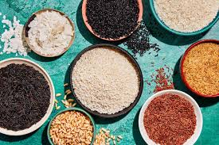

Rice is a staple in any kitchen, and with so many different types, it lends itself to an endless number of recipes. Each type of rice has its own taste, texture, and unique properties that work best in different applications. Plus, rice is naturally gluten-free, making it an easy way to offer gluten-free entrees to accommodate alternative diets on your menu. This guide examines factors that differentiate types of rice, from nutty basmati to fragrant jasmine, so you can choose the best rice for your next recipe.
is a medium grain rice that is wider in size and has a characteristic white dot at the center of the grain. It is named after the town of Arborio in the Po Valley of Italy, where it is grown. Due to the high starch content of Arborio rice, it has a slightly chewy and sticky consistency and develops a creamy texture when cooked.
Read more